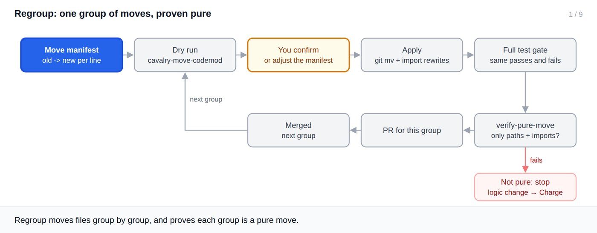
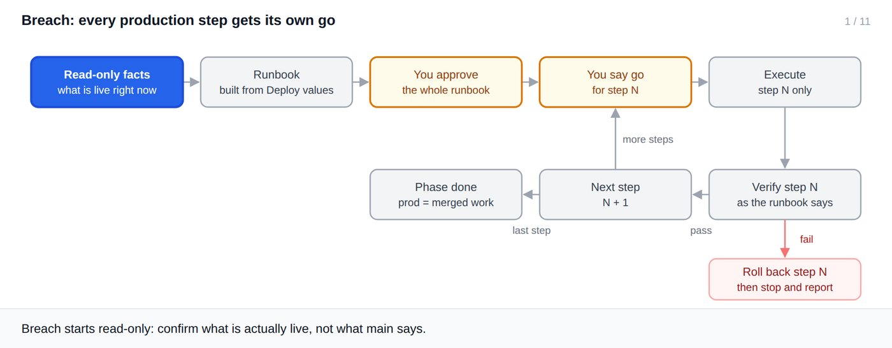

Phases 4–5
Regroup and Breach
An optional restructure that proves it changed nothing, then a rollout where every production step waits for your go.
Regroup (optional)

1 / 9
- Write a manifest, one
old -> newper line, placing every file the remaining queue will touch. - Dry run shows every move and import rewrite; nothing changes until you confirm.
--applyusesgit mvand rewrites imports; then the full gate; thencavalry-verify-pure-move.- One PR per group; the next group starts after it merges.
Real output: the dry run
$ cavalry-move-codemod moves-1.txt move src/applications.ts -> src/features/applications/api.ts rewrite src/Page.test.ts: '@/applications' -> '@/features/applications/api' src/Page.test.ts: '@/applications' -> '@/features/applications/api' src/Page.tsx: './applications' -> './features/applications/api' src/Page.tsx: './applications' -> './features/applications/api' src/applications.ts: './applications.css' -> '../../applications.css' 1 moves, 5 import rewrites in 3 files (dry run — nothing changed; pass --apply to perform) [exit 0]
Limit: non-code references are left for you
$ grep -n applications README.md # non-code references are left alone 1:See src/applications.ts for the list API. [exit 0]
Breach

1 / 11
- Reads, read-only, what is actually live. It never assumes
mainequals production. - Builds the runbook from
Deployvalues in order, with the promotion (merge commit) in its place. - Each step has a pre-check, a verification and its own rollback.
- You approve the runbook, then say go before every production step.
- For rules backends: an emulator test, then a byte-identical check of the live ruleset.
| Situation | What Cavalry does | What you do |
|---|---|---|
| A verification fails | Rolls back that step, then stops | Decide how to continue |
| Paused partway | Phase stays in progress, with the real state recorded | Resume later |
Production differs from main | Reports it first | Reconcile if needed |